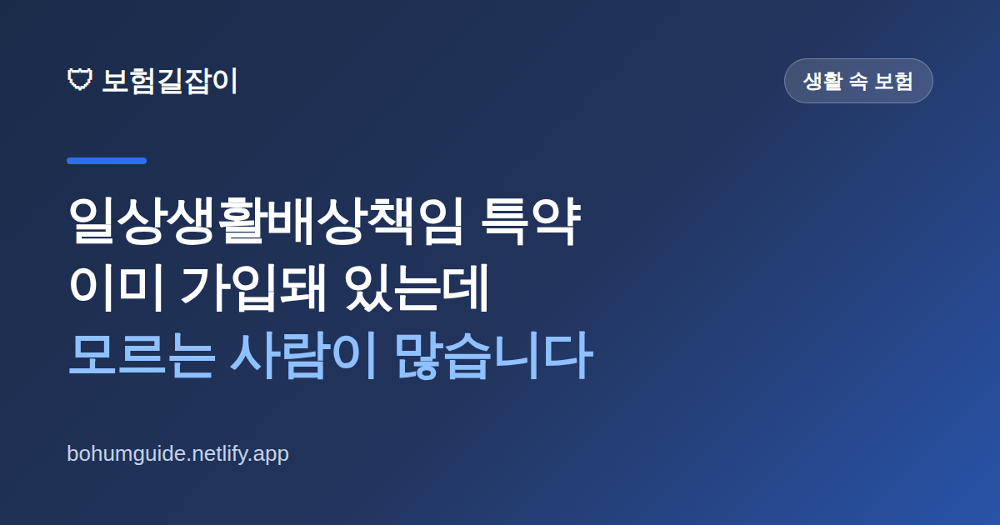

일상생활배상책임 특약, 이미 가입돼 있는데 모르는 사람이 많습니다
아이가 마트에서 물건을 깨뜨렸을 때, 우리 집 누수로 아랫집 천장이 젖었을 때, 자전거를 타다 남의 차를 긁었을 때. 이럴 때 쓸 수 있는 특약이 이미 내 보험에 붙어 있는 경우가 많습니다. 그런데 있는 줄 몰라서 그냥 사비로 물어주는 일이 흔합니다.

✍️ 편집자 참고: 본 글은 초안입니다. 보장 범위·자기부담금·가족 범위는 특약 종류와 약관에 따라 다르니, 게시 전 손해보험협회·금융감독원 최신 안내로 검수해 주세요.
일상생활배상책임 특약(줄여서 '일배책')은 일상생활 중 실수로 남에게 피해를 입혀 법적으로 배상해야 할 때 그 배상금을 보장해 주는 특약입니다. 보험료가 월 몇백 원에서 몇천 원 수준으로 저렴해 화재보험·상해보험·자동차보험 등에 끼워져 판매되는 경우가 많습니다. 그래서 "나는 그런 거 안 들었는데"라고 생각하는 분도 실제로는 가지고 있을 수 있습니다.
어떤 상황에 쓸 수 있나
핵심은 '일상생활 중', '실수로', '남에게' 피해를 준 경우라는 세 가지 조건입니다. 실제로 자주 청구되는 상황은 다음과 같습니다.
- 우리 집 누수로 아랫집 벽지·천장·가구가 손상된 경우
- 아이가 가게 물건이나 남의 물건을 파손한 경우
- 자전거를 타다 사람을 다치게 하거나 주차된 차를 긁은 경우
- 키우는 반려견이 다른 사람을 물거나 물건을 망가뜨린 경우
- 길을 걷다 실수로 남의 휴대전화를 떨어뜨려 파손한 경우
반대로 보장되지 않는 대표적인 경우도 알아둬야 합니다. 일반적으로 고의로 낸 사고, 본인이나 같이 사는 가족의 물건·신체 피해(남에게 준 피해가 아니므로), 업무·직무 수행 중 발생한 사고, 자동차 운행으로 인한 사고(이건 자동차보험 영역) 등은 제외되는 것이 보통입니다. 특히 "우리 집이 물에 젖은 것"은 배상책임이 아니라 주택화재보험의 재물 보장 영역이라는 점을 헷갈리지 마세요.
내가 가입돼 있는지 확인하는 법
확인 방법은 간단합니다. 가장 빠른 것은 금융감독원 '파인'이나 보험협회의 내 보험 조회 서비스로 가입 계약을 확인한 뒤, 각 계약의 특약 목록에 '일상생활배상책임' 또는 '가족일상생활배상책임'이 있는지 보는 것입니다. 보험사 앱이나 고객센터에서 "일상생활배상책임 특약이 있는지 확인해 달라"고 요청해도 됩니다.
'가족'일상생활배상책임이면 범위가 넓습니다
특약 이름에 '가족'이 붙어 있으면 배우자·자녀 등 가족이 낸 사고까지 보장되는 것이 일반적입니다. 아이가 사고를 냈을 때 부모 명의 보험으로 처리되는 이유가 이것입니다. 다만 가족의 범위와 동거 여부 조건은 약관마다 다르니 반드시 확인하세요.
알아둬야 할 두 가지: 자기부담금과 중복가입
이 특약을 실제로 쓸 때 반드시 알아야 할 것이 두 가지 있습니다.
1) 자기부담금이 있다
배상액 전액을 다 주는 것이 아니라, 일정 금액은 본인이 부담하고 그 초과분을 보장하는 구조가 일반적입니다. 그래서 피해 금액이 자기부담금보다 적으면 실제로 받을 보험금이 없을 수 있습니다. 자기부담금 개념이 낯설다면 보험 자기부담금이란?을 함께 보세요.
2) 여러 개 들어도 중복으로 못 받는다
일배책은 실제 손해를 보상하는 실손형입니다. 따라서 화재보험에도 있고 상해보험에도 붙어 있다면, 두 배로 받는 게 아니라 실제 배상액 한도 안에서 보험사끼리 나눠 부담합니다. 즉 일부러 여러 개 가입할 필요가 없습니다. 이 비례보상 원리는 실손보험 중복가입하면 보험금 두 배 받을까에서 다룬 것과 같습니다.
청구 전 이것부터
피해자와 합의 금액을 먼저 확정해 버리기 전에 보험사에 연락하세요. 임의로 합의한 금액이 그대로 인정되지 않을 수 있고, 사고 사실과 피해 규모를 입증할 사진·견적서·수리비 영수증이 필요합니다. 누수처럼 원인 확인이 필요한 건은 특히 기록을 남겨 두는 것이 중요합니다.
실전 체크 & 요약
정리하면 이렇습니다. 첫째, 일배책은 저렴해서 다른 보험에 끼워져 있는 경우가 많으니 먼저 가지고 있는지 확인합니다. 둘째, 없다면 월 몇백~몇천 원 수준으로 붙일 수 있는지 알아봅니다. 셋째, 이미 있다면 중복으로 더 들 필요는 없습니다. 넷째, 사고가 나면 합의 전에 보험사에 먼저 연락하고 증빙을 확보합니다.
- 내 보험에 이미 붙어 있는지부터 조회 — 모르고 사비로 무는 사례가 많음
- '가족'일상생활배상책임이면 자녀 사고까지 커버되는 것이 일반적
- 자기부담금 존재 — 소액 피해는 보험금이 없을 수 있음
- 실손형이라 여러 개 가입해도 중복 보상 안 됨
- 사고 시 합의 전 보험사 연락 + 사진·견적서 확보
참고할 수 있는 공신력 있는 자료
- 금융감독원 — 배상책임보험 관련 소비자 안내
- 파인(금융소비자 정보포털) — 내 보험 가입 내역·특약 조회
- 손해보험협회 — 손해보험 상품·특약 공시 정보
본 정보는 일반적인 안내이며, 보장 범위와 자기부담금·가족 범위는 각 보험사 약관과 금융감독원 등 관계기관을 통해 반드시 확인하시기 바랍니다.